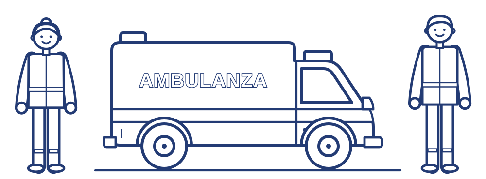

Misericordia di AricciaConfraternita di Misericordia di Ariccia ODV
Bambini · 3-5 anni
Colora l'ambulanza della Misericordia
3-5 anni🚑 Colora l'ambulanza e i due volontari della Misericordia. Scegli tu i colori che ti piacciono di più.

🚑 Con l'ambulanza i volontari accompagnano le persone malate a fare le cure, con gentilezza e senza fretta. ❤️